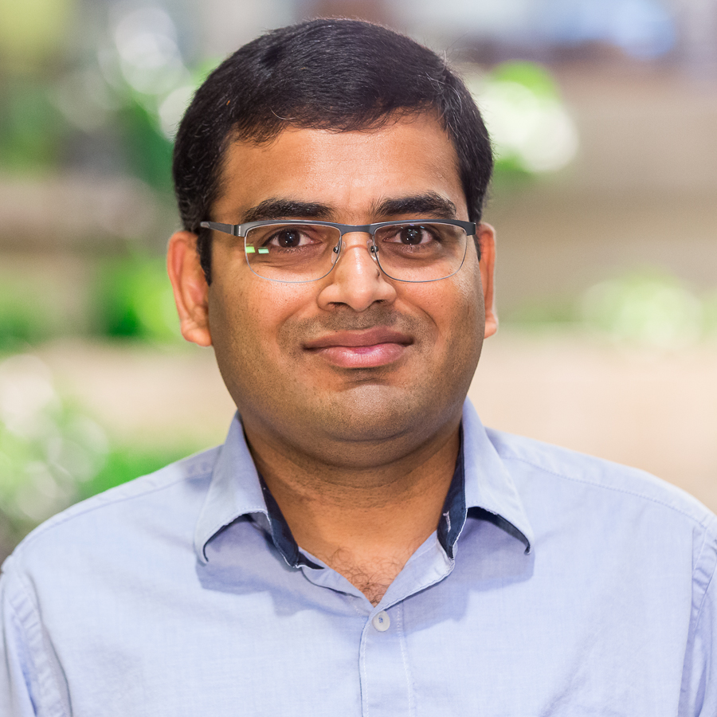

Sudheer Chunduri
Assistant Computer Scientist
Leadership Computing Facility
Argonne National Laboratory.
Leadership Computing Facility
Argonne National Laboratory.
Sudheer Chunduri is an assistant computer scientist in the Leadership Computing Facility at Argonne National Laboratory.
His research focuses on scalable tools for measuring and analyzing HPC interconnects performance.
He is a member of the performance engineering team that is currently involved with the co-design efforts related to the future exascale machine Aurora.
Sudheer has been at ANL since 2016. He was a researcher at IBM India Research Laboratory between 2013 and 2016. He received Ph.D. and Master degrees in Computer Science from SSSIHL, India.
Assistant Computer Scientist, Argonne National Laboratory, June 2017 - Present
Postdoctoral Appointee, Argonne National Laboratory, June 2016 - May 2017
Researcher, IBM India Research Lab, India, July 2013 - May 2016
Assistant Professor, Sri Sathya Sai Institute of Higher Learning, India, July 2011 - May 2013
1123, Building 240, 9700 S. Cass Avenue, Lemont, IL 60439 Phone: +1-630-252-5821 Email: sudheer@anl.gov
 orcid.org/0000-0002-2186-329X
orcid.org/0000-0002-2186-329X